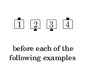
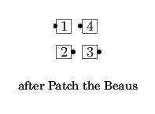
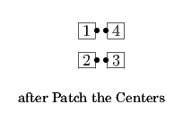

From a Couple or Mini-Wave: Hinge; original designated dancers U-Turn Back in flow direction (i.e., Roll twice). Ends in a Couple or Mini-Wave.
  
Note: Determine who are the designated dancers before doing the Hinge, not after. For example, from a Couple: Patch the Beaus is a Partner Hinge (now both dancers are Beaus) followed by original Beau U-Turn Back. Similarly, from Parallel Lines: Patch the Ends refers to the original Ends, not those who become Ends after the Hinge.
© Copyright 2004-2017 Vic Ceder and CALLERLAB Inc., The International Association of Square Dance Callers. Permission to reprint, republish, and create derivative works without royalty is hereby granted, provided this notice appears. Publication on the Internet of derivative works without royalty is hereby granted provided this notice appears. Permission to quote parts or all of this document without royalty is hereby granted, provided this notice is included. Information contained herein shall not be changed nor revised in any derivation or publication.